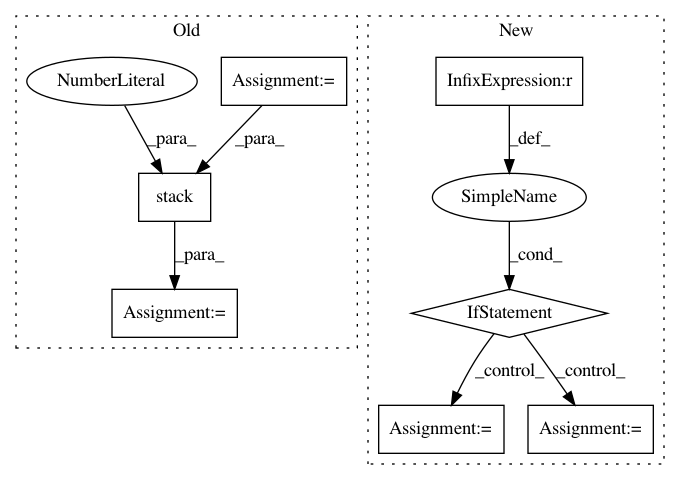

e18e682858c57124d46c40e8ab1d136c009a1f69,kornia/geometry/homography.py,,find_homography_dlt,#Any#Any#Any#,10
Before Change
ax = torch.cat([zeros, zeros, zeros, -x1, -y1, -ones, y2 * x1, y2 * y1, y2], dim=-1)
ay = torch.cat([x1, y1, ones, zeros, zeros, zeros, -x2 * x1, -x2 * y1, -x2], dim=-1)
w_list = []
axy_list = []
for i in range(points1.shape[1]):
axy_list.append(ax[:, i])
axy_list.append(ay[:, i])
w_list.append(weights[:, i])
w_list.append(weights[:, i])
A = torch.stack(axy_list, dim=1)
w = torch.stack(w_list, dim=1)
// apply weights
w_diag = torch.diag_embed(w)
A = A.transpose(-2, -1) @ w_diag @ A
After Change
ay = torch.cat([x1, y1, ones, zeros, zeros, zeros, -x2 * x1, -x2 * y1, -x2], dim=-1)
A = torch.cat((ax, ay), dim=-1).reshape(ax.shape[0], -1, ax.shape[-1])
if weights is None:
// All points are equally important
A = A.transpose(-2, -1) @ A
else:
// We should use provided weights
assert len(weights.shape) == 2 and weights.shape == points1.shape[:2], weights.shape
w_diag = torch.diag_embed(weights.repeat(1, 2))
A = A.transpose(-2, -1) @ w_diag @ A
try:
U, S, V = torch.svd(A)
except:
warnings.warn("SVD did not converge", RuntimeWarning)
In pattern: SUPERPATTERN
Frequency: 3
Non-data size: 7
Instances
Project Name: arraiy/torchgeometry
Commit Name: e18e682858c57124d46c40e8ab1d136c009a1f69
Time: 2020-10-06
Author: daniel.koguciuk@gmail.com
File Name: kornia/geometry/homography.py
Class Name:
Method Name: find_homography_dlt
Project Name: bethgelab/foolbox
Commit Name: 80cfb0e5f889c65a972ebde6c6dae4278b5e28c1
Time: 2020-02-14
Author: git@jonasrauber.de
File Name: foolbox/attacks/base.py
Class Name: MinimizationAttack
Method Name: __call__
Project Name: fgnt/pb_bss
Commit Name: 2cfa9aa576ae7544f76e66854edd304690a5822b
Time: 2019-08-08
Author: mail@lukas-drude.de
File Name: paderbox/speech_enhancement/beamformer_wrapper.py
Class Name:
Method Name: get_multi_source_bf_vector_from_masks